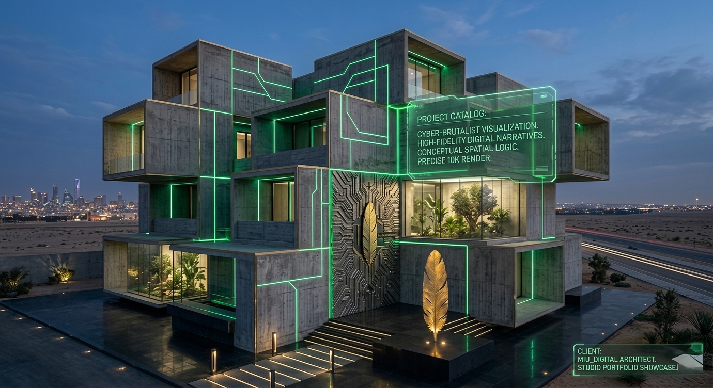

Restricted_Chamber
// System_Status: 100%_Declassified // Auth: Founder_33

[INT_VAULT_01]

[EXT_CATALOG_033]
● LIVE_FEED_033
Digital Architect // Riyadh Sync
[MANIFESTO_01]
// System_Status: 100%_Declassified // Auth: Founder_33


SYSTEM ACCELERATED: 5 DAYS
Aurelia Paris
Armani Privé
لكل منشأة روح // 每一个建筑都有灵魂
EVERY SCENT HAS A SOUL.

Access: Restricted Mansion Chamber